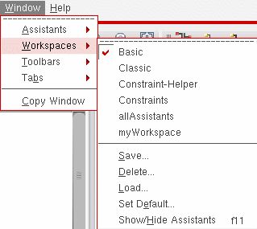
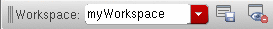

Selecting a Workspace
To select a workspace using the menu banner:
-
Choose Window – Workspaces.
A submenu of workspaces appears listing only those configurations available for use with the current cellview/application.
 -
Select the workspace you want to apply to the current session window.
The program applies the workspace you selected to the current session window.
Alternatively, you can select a workspace from the drop-down combo box on the Workspaces toolbar.

Assistant panes that are part of a Cadence workspace are initially docked. You can modify the arrangement of your session window and save it as a custom workspace.
Related Topics
Return to top